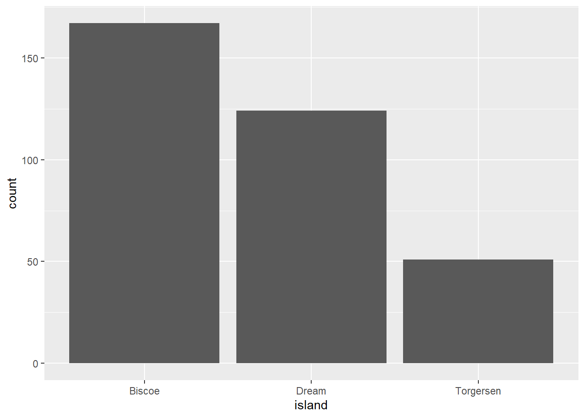
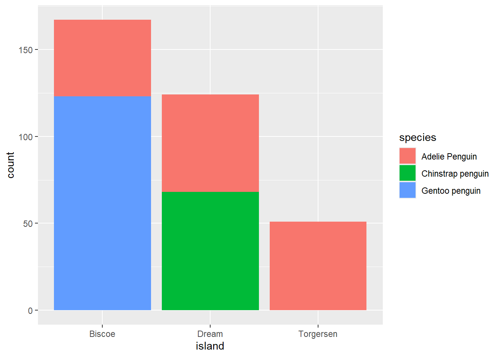
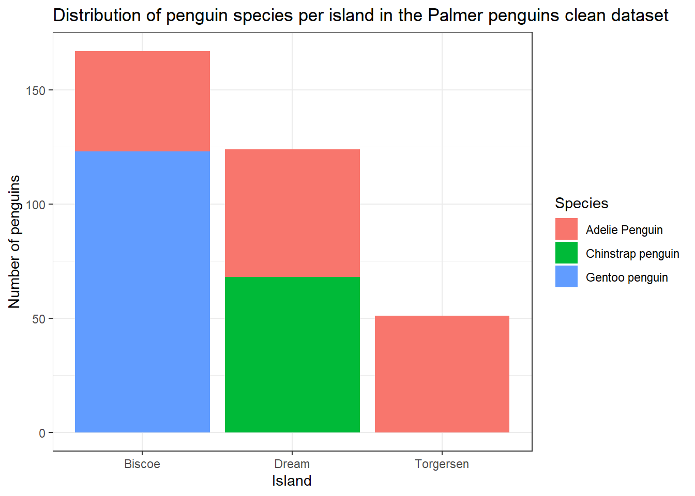
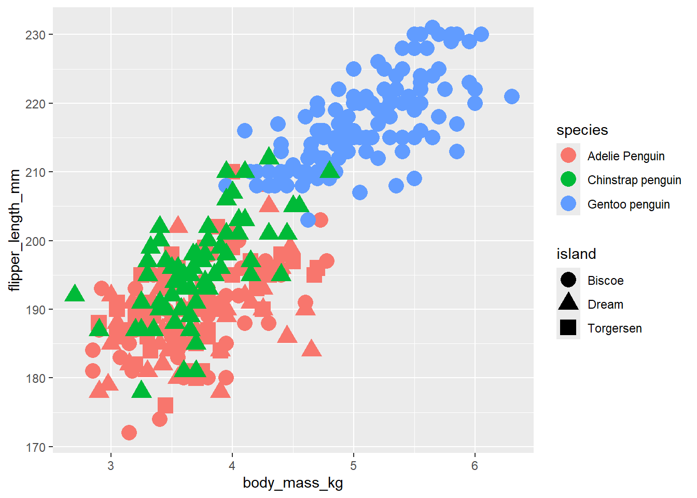
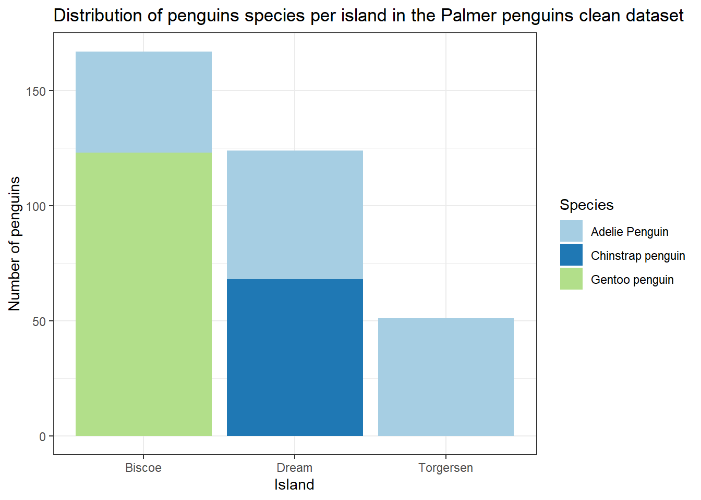
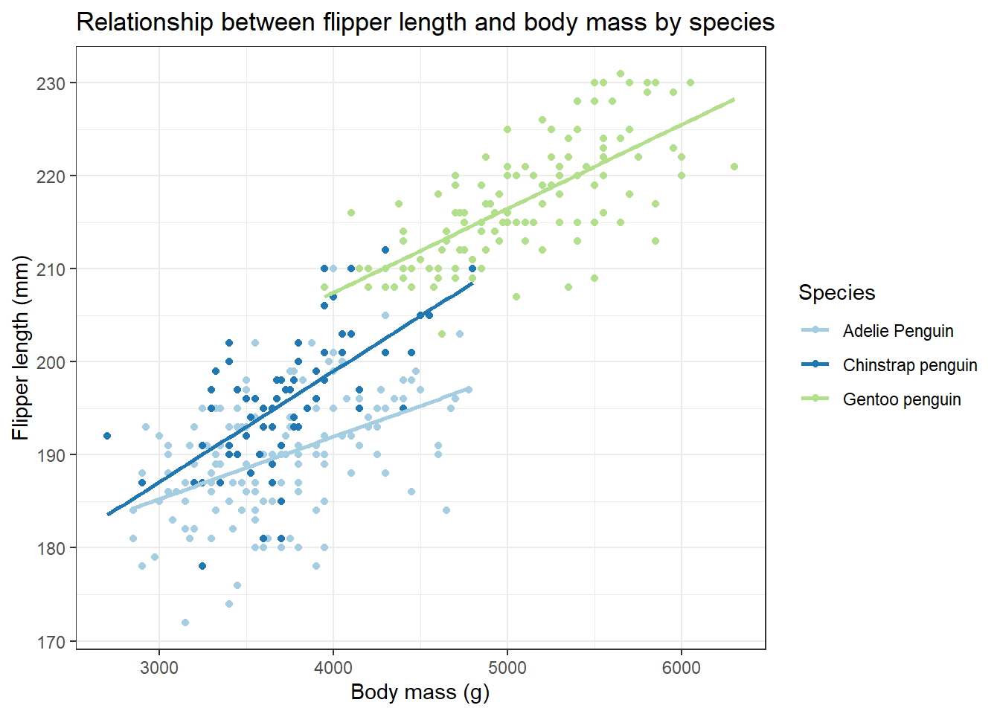
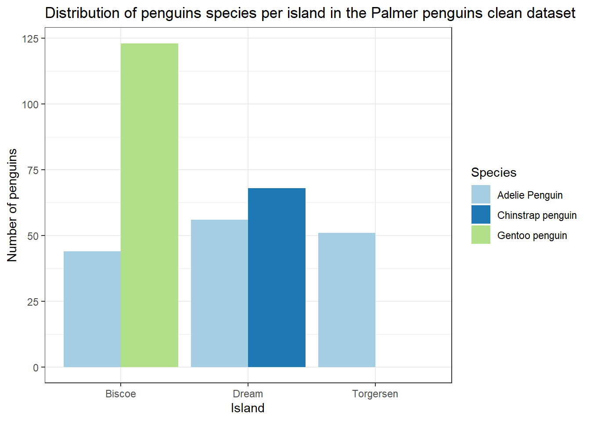
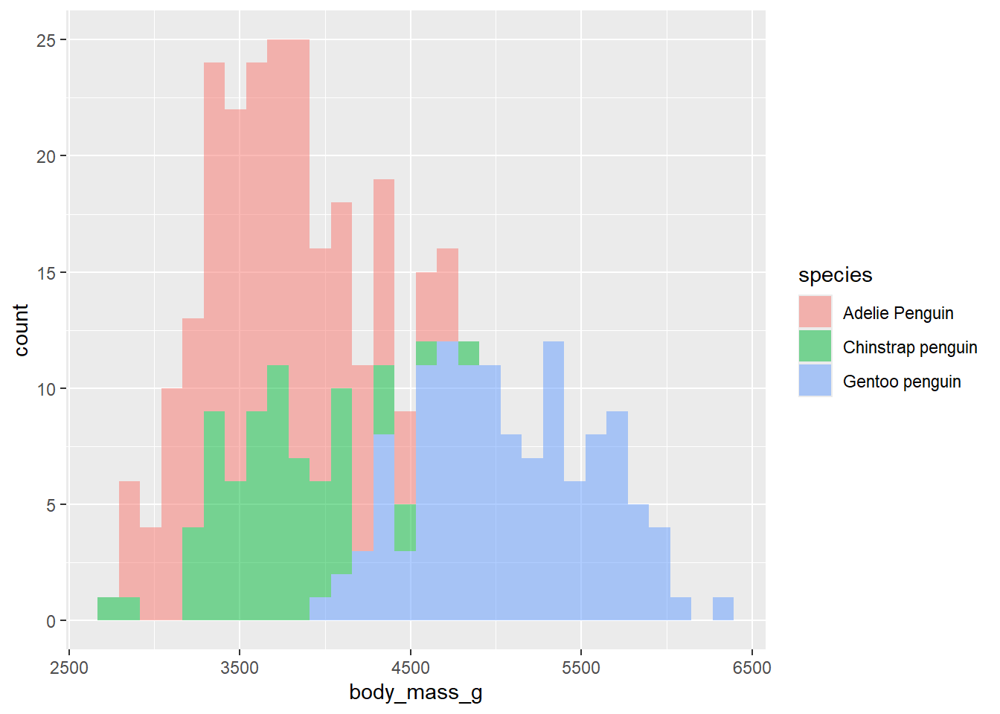

Bring Your Own Data (BYOD) Series
Summarizing and Visualizing Your Data in R
1 Workshop goals
The goal of this workshop is to provide the tools and hands-on experience necessary so that participants are comfortable importing and tidying up their data in R, creating summaries, and generating publication-quality figures. If time allows we could also explore simple statistical models during the practice section of the workshop.
Throughout this workshop we will use the syntax of the tidyverse group of packages, which offers an efficient way of coding and building complexity in data manipulation steps in an organized and structured way.
The content presented in this document was inspired by some of the courses presented at MDH R Camp. We encourage all participants to take a look at the material generously shared by MDH by following that link; it contains excellent instructional videos and coding examples.
2 Setting-up our work space
Let’s set up our work space for the day by first creating a new RStudio project for this workshop. All of the scripts and data used in the workshop should be saved to that project so that everything can be easily referenced in the future.
We will now take a few moments to demonstrate how to set-up a new RStudio project. When that is done, we’ll create folders for data, scripts, and outputs in our project folder. Finally, let’s create a new R script. We can name it penguins_data_demo.r or you can chose another script name if you’d like. This script will contain everything that we will demonstrate in this class with a dataset that we will provide (penguins!).
3 Loading our tools
3.1 Packages
In this section, we will learn about the different packages that we will be using in this workshop and will explore different functions for reading files into r.
| Package | Purpose |
|---|---|
| readr | Read delimited files |
| readxl | Read excel files |
| tidyr | Tidy messy data |
| dplyr | Format and summarize data tables |
| stringr | Format character strings |
| janitor | More data cleaning (not in the tidyverse) |
| ggplot2 | Create elegant data visualisations using the grammar of graphics |
| tidyverse | Load many of the packages in the tidyverse |
Let’s load packages!
# load packages in the tidyverse (e.g., readr, readxl, tidyr)
library(tidyverse)
library(readxl)
# we can check what packages were loaded
names(sessionInfo()[["otherPkgs"]]) [1] "readxl" "lubridate" "forcats" "stringr" "dplyr"
[6] "purrr" "readr" "tidyr" "tibble" "ggplot2"
[11] "tidyverse" "kableExtra"3.2 Loading data
Let’s load a few datasets in different formats. First, you’ll need to download the data to your computer and save it in a folder called “data” that’s inside of your RStudio project.
Since we stored the data inside a folder in the project, the file path is very simple. If you need to load data that is stored outside the project, you will need to specify the whole file path.
# load a .xlsx file into your R environment
mydat_xls <- read_excel("data/penguin_data_final.xlsx") Next, let’s try loading data from a url. We would use the read_csv function for data on our computer as well.
# load a .csv file into your R environment
mydat_csv <- read_csv("https://raw.githubusercontent.com/MN-DNR-R/BYOD_Seminar1_Data_Summaries_and_Visualization/refs/heads/main/data/penguin_data_final.csv?token=GHSAT0AAAAAADGVPTNKVJGII66G3RODGYUA2JGFBOA") A summary of the data is generated when you use the “read_” functions. You can also look in the environment and make sure that the files were loaded properly! We will also demonstrate ways to explore your data in the next section.
3.3 Data from a package
Some datasets are stored inside of R packages. We will use one that’s in a package for the rest of our demonstration.
The palmerpenguins package was created by Allison Horst, Alison Hill, and Kristen Gorman as a tool for teaching data manipulation and analysis techniques in R. In the following sections we will explore the data available within this package, and we will learn to manipulate and visualize the data using a variety of tools and techniques. Below you will use the citation() command line to get the full citation for the package!
The library contains two datasets which can be called without having to read them manually (as we previously did with the .csv or .xlsx files). One which contains raw penguins data (penguin_raw), and the second file (penguins) is the simplified (i.e., clean) dataset.
You also can read more about the package here: PalmerPenguins
# install package (delete the '#' to run the line and use the '#' after you've installed the package)
# install.packages("palmerpenguins")
# load library into your R environment.
library(palmerpenguins)
# get information about the palmerpenguins package:
?palmerpenguins
# Get proper citation for package if we were to be using this in publication. Note that you can use the "citation" function for any of the packages used in an analysis, which is very useful when writing the methods in a report or peer-reviewed manuscript.
citation("palmerpenguins")To cite palmerpenguins in publications use:
Horst AM, Hill AP, Gorman KB (2020). palmerpenguins: Palmer
Archipelago (Antarctica) penguin data. R package version 0.1.0.
https://allisonhorst.github.io/palmerpenguins/. doi:
10.5281/zenodo.3960218.
A BibTeX entry for LaTeX users is
@Manual{,
title = {palmerpenguins: Palmer Archipelago (Antarctica) penguin data},
author = {Allison Marie Horst and Alison Presmanes Hill and Kristen B Gorman},
year = {2020},
note = {R package version 0.1.0},
doi = {10.5281/zenodo.3960218},
url = {https://allisonhorst.github.io/palmerpenguins/},
}# let's save the raw data in our environment
rawdat <- penguins_raw4 Getting to know your data
4.1 Data exploration functions
There are many functions available to explore the data. Here is a list of the main ones that we will be using in this workshop.
| Function | Purpose |
|---|---|
| glimpse() | Overview of dataframe rows, columns, column names, daraframe dimension, and a glimpse of first values |
| str() | Succinct summary of all columns of a dataframe; similar to glimpse but within base R |
| names() | Column names |
| head() | Display first n rows of data (default is 6) |
| tail() | Displays last n rows of data (default is 6) |
| nrow() | Number of rows |
| ncol() | Number of columns |
| summary() | Summary of the data in each column |
| unique() | Displays unique values of a variable |
4.2 Data types
Before doing any data manipulation in R, it is important to recognize the different data types. When importing your data into R, R will automatically recognize the type of data of each column. At times, however, a specific data type may need to be set or converted from one to another.
For example, one could use the as.numeric() function to convert a column to numeric, or as.character() to convert to character. When doing such data conversion, it is important to note that some elements of a vector may be converted to NAs if R recognizes that it does not correspond to the data type specified.
A good example of this is when a column that should be numeric contains characters (e.g., instead of an actual counts one had recorded something like more then 100 animals). In this case, this would return an NA as R does not know what to do with this information! Good data entry and quality checks prior to importing data into R are very important to help prevent data loss.
With a factor data type, you can specify the order of variables, such as “low”, “medium”, “high”. This defined order can then make data visualizations and analyses more intuitive.
| Type | Example |
|---|---|
| Numeric | 1.5, 2.6 |
| Integer | 1, 2 |
| Logical | True/False |
| Character | One, Two |
| Factor | Control, Treatment |
4.3 Examining the data
Let’s use the functions from the function description table above to examine what is contained in our dataset.
# the glimpse function provides a good first overview of the data
glimpse(rawdat)Rows: 344
Columns: 17
$ studyName <chr> "PAL0708", "PAL0708", "PAL0708", "PAL0708", "PAL…
$ `Sample Number` <dbl> 1, 2, 3, 4, 5, 6, 7, 8, 9, 10, 11, 12, 13, 14, 1…
$ Species <chr> "Adelie Penguin (Pygoscelis adeliae)", "Adelie P…
$ Region <chr> "Anvers", "Anvers", "Anvers", "Anvers", "Anvers"…
$ Island <chr> "Torgersen", "Torgersen", "Torgersen", "Torgerse…
$ Stage <chr> "Adult, 1 Egg Stage", "Adult, 1 Egg Stage", "Adu…
$ `Individual ID` <chr> "N1A1", "N1A2", "N2A1", "N2A2", "N3A1", "N3A2", …
$ `Clutch Completion` <chr> "Yes", "Yes", "Yes", "Yes", "Yes", "Yes", "No", …
$ `Date Egg` <date> 2007-11-11, 2007-11-11, 2007-11-16, 2007-11-16,…
$ `Culmen Length (mm)` <dbl> 39.1, 39.5, 40.3, NA, 36.7, 39.3, 38.9, 39.2, 34…
$ `Culmen Depth (mm)` <dbl> 18.7, 17.4, 18.0, NA, 19.3, 20.6, 17.8, 19.6, 18…
$ `Flipper Length (mm)` <dbl> 181, 186, 195, NA, 193, 190, 181, 195, 193, 190,…
$ `Body Mass (g)` <dbl> 3750, 3800, 3250, NA, 3450, 3650, 3625, 4675, 34…
$ Sex <chr> "MALE", "FEMALE", "FEMALE", NA, "FEMALE", "MALE"…
$ `Delta 15 N (o/oo)` <dbl> NA, 8.94956, 8.36821, NA, 8.76651, 8.66496, 9.18…
$ `Delta 13 C (o/oo)` <dbl> NA, -24.69454, -25.33302, NA, -25.32426, -25.298…
$ Comments <chr> "Not enough blood for isotopes.", NA, NA, "Adult…# the str function also provides a quick but complete overview of the structure of the data
str(rawdat)tibble [344 × 17] (S3: tbl_df/tbl/data.frame)
$ studyName : chr [1:344] "PAL0708" "PAL0708" "PAL0708" "PAL0708" ...
$ Sample Number : num [1:344] 1 2 3 4 5 6 7 8 9 10 ...
$ Species : chr [1:344] "Adelie Penguin (Pygoscelis adeliae)" "Adelie Penguin (Pygoscelis adeliae)" "Adelie Penguin (Pygoscelis adeliae)" "Adelie Penguin (Pygoscelis adeliae)" ...
$ Region : chr [1:344] "Anvers" "Anvers" "Anvers" "Anvers" ...
$ Island : chr [1:344] "Torgersen" "Torgersen" "Torgersen" "Torgersen" ...
$ Stage : chr [1:344] "Adult, 1 Egg Stage" "Adult, 1 Egg Stage" "Adult, 1 Egg Stage" "Adult, 1 Egg Stage" ...
$ Individual ID : chr [1:344] "N1A1" "N1A2" "N2A1" "N2A2" ...
$ Clutch Completion : chr [1:344] "Yes" "Yes" "Yes" "Yes" ...
$ Date Egg : Date[1:344], format: "2007-11-11" "2007-11-11" ...
$ Culmen Length (mm) : num [1:344] 39.1 39.5 40.3 NA 36.7 39.3 38.9 39.2 34.1 42 ...
$ Culmen Depth (mm) : num [1:344] 18.7 17.4 18 NA 19.3 20.6 17.8 19.6 18.1 20.2 ...
$ Flipper Length (mm): num [1:344] 181 186 195 NA 193 190 181 195 193 190 ...
$ Body Mass (g) : num [1:344] 3750 3800 3250 NA 3450 ...
$ Sex : chr [1:344] "MALE" "FEMALE" "FEMALE" NA ...
$ Delta 15 N (o/oo) : num [1:344] NA 8.95 8.37 NA 8.77 ...
$ Delta 13 C (o/oo) : num [1:344] NA -24.7 -25.3 NA -25.3 ...
$ Comments : chr [1:344] "Not enough blood for isotopes." NA NA "Adult not sampled." ...
- attr(*, "spec")=
.. cols(
.. studyName = col_character(),
.. `Sample Number` = col_double(),
.. Species = col_character(),
.. Region = col_character(),
.. Island = col_character(),
.. Stage = col_character(),
.. `Individual ID` = col_character(),
.. `Clutch Completion` = col_character(),
.. `Date Egg` = col_date(format = ""),
.. `Culmen Length (mm)` = col_double(),
.. `Culmen Depth (mm)` = col_double(),
.. `Flipper Length (mm)` = col_double(),
.. `Body Mass (g)` = col_double(),
.. Sex = col_character(),
.. `Delta 15 N (o/oo)` = col_double(),
.. `Delta 13 C (o/oo)` = col_double(),
.. Comments = col_character()
.. )# quick summary of all of the data
summary(rawdat) studyName Sample Number Species Region
Length:344 Min. : 1.00 Length:344 Length:344
Class :character 1st Qu.: 29.00 Class :character Class :character
Mode :character Median : 58.00 Mode :character Mode :character
Mean : 63.15
3rd Qu.: 95.25
Max. :152.00
Island Stage Individual ID Clutch Completion
Length:344 Length:344 Length:344 Length:344
Class :character Class :character Class :character Class :character
Mode :character Mode :character Mode :character Mode :character
Date Egg Culmen Length (mm) Culmen Depth (mm) Flipper Length (mm)
Min. :2007-11-09 Min. :32.10 Min. :13.10 Min. :172.0
1st Qu.:2007-11-28 1st Qu.:39.23 1st Qu.:15.60 1st Qu.:190.0
Median :2008-11-09 Median :44.45 Median :17.30 Median :197.0
Mean :2008-11-27 Mean :43.92 Mean :17.15 Mean :200.9
3rd Qu.:2009-11-16 3rd Qu.:48.50 3rd Qu.:18.70 3rd Qu.:213.0
Max. :2009-12-01 Max. :59.60 Max. :21.50 Max. :231.0
NA's :2 NA's :2 NA's :2
Body Mass (g) Sex Delta 15 N (o/oo) Delta 13 C (o/oo)
Min. :2700 Length:344 Min. : 7.632 Min. :-27.02
1st Qu.:3550 Class :character 1st Qu.: 8.300 1st Qu.:-26.32
Median :4050 Mode :character Median : 8.652 Median :-25.83
Mean :4202 Mean : 8.733 Mean :-25.69
3rd Qu.:4750 3rd Qu.: 9.172 3rd Qu.:-25.06
Max. :6300 Max. :10.025 Max. :-23.79
NA's :2 NA's :14 NA's :13
Comments
Length:344
Class :character
Mode :character
# print column names
names(rawdat) [1] "studyName" "Sample Number" "Species"
[4] "Region" "Island" "Stage"
[7] "Individual ID" "Clutch Completion" "Date Egg"
[10] "Culmen Length (mm)" "Culmen Depth (mm)" "Flipper Length (mm)"
[13] "Body Mass (g)" "Sex" "Delta 15 N (o/oo)"
[16] "Delta 13 C (o/oo)" "Comments" # look at first and last rows
head(rawdat, n = 10)# A tibble: 10 × 17
studyName `Sample Number` Species Region Island Stage `Individual ID`
<chr> <dbl> <chr> <chr> <chr> <chr> <chr>
1 PAL0708 1 Adelie Penguin… Anvers Torge… Adul… N1A1
2 PAL0708 2 Adelie Penguin… Anvers Torge… Adul… N1A2
3 PAL0708 3 Adelie Penguin… Anvers Torge… Adul… N2A1
4 PAL0708 4 Adelie Penguin… Anvers Torge… Adul… N2A2
5 PAL0708 5 Adelie Penguin… Anvers Torge… Adul… N3A1
6 PAL0708 6 Adelie Penguin… Anvers Torge… Adul… N3A2
7 PAL0708 7 Adelie Penguin… Anvers Torge… Adul… N4A1
8 PAL0708 8 Adelie Penguin… Anvers Torge… Adul… N4A2
9 PAL0708 9 Adelie Penguin… Anvers Torge… Adul… N5A1
10 PAL0708 10 Adelie Penguin… Anvers Torge… Adul… N5A2
# ℹ 10 more variables: `Clutch Completion` <chr>, `Date Egg` <date>,
# `Culmen Length (mm)` <dbl>, `Culmen Depth (mm)` <dbl>,
# `Flipper Length (mm)` <dbl>, `Body Mass (g)` <dbl>, Sex <chr>,
# `Delta 15 N (o/oo)` <dbl>, `Delta 13 C (o/oo)` <dbl>, Comments <chr>tail(rawdat, n = 10)# A tibble: 10 × 17
studyName `Sample Number` Species Region Island Stage `Individual ID`
<chr> <dbl> <chr> <chr> <chr> <chr> <chr>
1 PAL0910 59 Chinstrap peng… Anvers Dream Adul… N95A1
2 PAL0910 60 Chinstrap peng… Anvers Dream Adul… N95A2
3 PAL0910 61 Chinstrap peng… Anvers Dream Adul… N96A1
4 PAL0910 62 Chinstrap peng… Anvers Dream Adul… N96A2
5 PAL0910 63 Chinstrap peng… Anvers Dream Adul… N98A1
6 PAL0910 64 Chinstrap peng… Anvers Dream Adul… N98A2
7 PAL0910 65 Chinstrap peng… Anvers Dream Adul… N99A1
8 PAL0910 66 Chinstrap peng… Anvers Dream Adul… N99A2
9 PAL0910 67 Chinstrap peng… Anvers Dream Adul… N100A1
10 PAL0910 68 Chinstrap peng… Anvers Dream Adul… N100A2
# ℹ 10 more variables: `Clutch Completion` <chr>, `Date Egg` <date>,
# `Culmen Length (mm)` <dbl>, `Culmen Depth (mm)` <dbl>,
# `Flipper Length (mm)` <dbl>, `Body Mass (g)` <dbl>, Sex <chr>,
# `Delta 15 N (o/oo)` <dbl>, `Delta 13 C (o/oo)` <dbl>, Comments <chr># number of rows and columns
nrow(rawdat)[1] 344ncol(rawdat)[1] 17# lists unique values (this can help identify if there are data entry errors)
unique(rawdat$Species)[1] "Adelie Penguin (Pygoscelis adeliae)"
[2] "Gentoo penguin (Pygoscelis papua)"
[3] "Chinstrap penguin (Pygoscelis antarctica)"unique(rawdat$Island)[1] "Torgersen" "Biscoe" "Dream" unique(rawdat$Region)[1] "Anvers"# How many unique ID's do we have? How many data points do we have? Do they match?
unique(rawdat$`Individual ID`) [1] "N1A1" "N1A2" "N2A1" "N2A2" "N3A1" "N3A2" "N4A1" "N4A2"
[9] "N5A1" "N5A2" "N6A1" "N6A2" "N7A1" "N7A2" "N8A1" "N8A2"
[17] "N9A1" "N9A2" "N10A1" "N10A2" "N11A1" "N11A2" "N12A1" "N12A2"
[25] "N13A1" "N13A2" "N17A1" "N17A2" "N18A1" "N18A2" "N21A1" "N21A2"
[33] "N22A1" "N22A2" "N23A1" "N23A2" "N24A1" "N24A2" "N25A1" "N25A2"
[41] "N26A1" "N26A2" "N27A1" "N27A2" "N28A1" "N28A2" "N29A1" "N29A2"
[49] "N30A1" "N30A2" "N32A1" "N32A2" "N34A1" "N34A2" "N35A1" "N35A2"
[57] "N36A1" "N36A2" "N37A1" "N37A2" "N38A1" "N38A2" "N39A1" "N39A2"
[65] "N40A1" "N40A2" "N41A1" "N41A2" "N42A1" "N42A2" "N44A1" "N44A2"
[73] "N45A1" "N45A2" "N46A1" "N46A2" "N48A1" "N48A2" "N49A1" "N49A2"
[81] "N50A1" "N50A2" "N47A1" "N47A2" "N51A1" "N51A2" "N53A1" "N53A2"
[89] "N55A1" "N55A2" "N58A1" "N58A2" "N60A1" "N60A2" "N61A1" "N61A2"
[97] "N63A1" "N63A2" "N64A1" "N64A2" "N66A1" "N66A2" "N67A1" "N67A2"
[105] "N69A1" "N69A2" "N71A1" "N71A2" "N72A1" "N72A2" "N73A1" "N73A2"
[113] "N76A1" "N76A2" "N77A1" "N77A2" "N78A1" "N78A2" "N79A1" "N79A2"
[121] "N80A1" "N80A2" "N81A1" "N81A2" "N82A1" "N82A2" "N83A1" "N83A2"
[129] "N84A1" "N84A2" "N85A1" "N85A2" "N31A1" "N31A2" "N33A1" "N33A2"
[137] "N56A1" "N56A2" "N14A1" "N14A2" "N15A1" "N15A2" "N16A1" "N16A2"
[145] "N19A1" "N19A2" "N20A1" "N20A2" "N54A1" "N54A2" "N43A1" "N43A2"
[153] "N62A1" "N62A2" "N68A1" "N68A2" "N70A1" "N70A2" "N89A1" "N89A2"
[161] "N65A1" "N65A2" "N74A1" "N74A2" "N75A1" "N75A2" "N86A1" "N86A2"
[169] "N87A1" "N87A2" "N88A1" "N88A2" "N90A1" "N90A2" "N92A1" "N92A2"
[177] "N93A1" "N93A2" "N94A1" "N94A2" "N95A1" "N95A2" "N96A1" "N96A2"
[185] "N98A1" "N98A2" "N99A1" "N99A2" "N100A1" "N100A2"4.4 Data quality check
Looking at the raw data, what do you observe could be improved for facilitating some analyses and data visualizations? Is the dataset pretty clean and analysis-ready, or are there things that need to be addressed and changed so that we don’t run into issues later in the process?
Here are some examples:
- species names are long
- some columns may not be necessary
- individual ID is not unique
- we may want columns that classify the data based on some criteria (e.g., a) heavy or light and b) long-, medium-, or short-billed).
5 Tidying your data
5.1 What is tidy data?
We refer to “tidy data” as a dataset where each column is a variable, each row is an observation, and each cell contains a single value and a data type that is consistent across a given column (e.g., all numeric). The tidyr package contains functions for manipulating the data so that we can create a clean, tidy dataset to-be-used for all analyses.
Note: Recall that we will never overwrite the original dataset. The raw data should always remain in its original location and be kept unaltered. The beauty of R scripts is that we can save all data cleaning and data manipulation steps while retaining the original unaltered data.
5.2 Why is it important to tidy our data?
Taking time to tidy a dataset ensures that the data summaries, analyses, or visualizations we produce represent “true” data values to the best of our knowledge (e.g., no wrongly assigned missing data or data-entry related outliers). It is the first and most critical step of any data analysis, and though it can be a lengthy process, it is worth the effort!
5.3 Why tidying data in R?
Using R and R scripts ensures that the original dataset is kept, and that all data manipulation steps are documented and reproducible. This is a major advantage of tidying data in R as opposed to using spreadsheet applications such as Excel, where there is often no to little track records of changes made to a dataset.
5.4 Introducing pipe operator
The tidyr syntax uses the pipe operator %>% or |>, which provides a way to efficiently chain functions together in a single statement. It is similar to saying: let’s take this data, and then do this with it, and then do this, etc. So ultimately, every time that you see or use %>% in a script, you can think of it as being the same as if you were reading or coding and then…! R uses many different operators which includes symbols such as <- and = along with typical arithmetic (+, -, *, /, ^) and relational (<, >, <=, >=, == ,!=) symbols. Too increase efficiency, the tidyr library uses symbols called pipe operators (%>%). These allow you to string together functions to run sequentially, moving left to right, kind of like a data assembly line. It helps keep the data tidy by creating new versions of your dataset, while keeping the original version. These pipe operators also tend to be more computationally efficient than base R, leading to quicker processing times, especially for large datasets.
#Edit the raw data to filter for samples collected from Torgersen Island and arrange the table by the date the egg was collected
torg <- rawdat %>% filter(Island == "Torgersen") %>% arrange('Date Egg')The pipe operator %>% or |> provides a way to efficiently chain functions together in a single statement. It is similar to saying: let’s take this data, and then do this with it, and then do this, etc. So ultimately, every time that you see or use %>% in a script, you can think of it as being the same as if you were reading or coding and then…!
More background on the origin and use of the pipe operator can be found here.
5.5 Let’s clean-up some of those columns
Now that we’ve introduced a few basic tidy data concepts and coding tools, we can now start looking at our data more formally. There are many very useful functions to subset dataframes, re-arrange columns, create new columns, etc. Below are the ones you may run into more frequently as you learn to tidy your data in R and with the tidyr package.
| Function | Purpose |
|---|---|
| filter() | keep (or exclude) rows that meet specific criteria |
| select() | select columns to keep (or to drop) |
| arrange() | sort a dataframe based on a column's value (or several columns' values) |
| mutate() | add new columns or update existing columns |
5.5.1 Formating variable names
# Let's take a look at the data again
head(rawdat)
names(rawdat)
# lower column names
names(rawdat)<-tolower(names(rawdat))
names(rawdat)
# replace spaces; spaces in variable names are just slightly more complicated to code and it is much simpler not to have any spaces at all
names(rawdat)<-str_replace_all(names(rawdat)," ","_") # Note: str_replace_all is part of the stringr package, automatically loaded when we load tidyverse, but it could be loaded individually as well.
# further modify column names for simplicity
names(rawdat)<-str_replace_all(names(rawdat),"\\(|\\)","")5.5.2 Removing unecessary data, creating variables, and subsetting the dataset
# keep only columns of interest; we will now create a new clean dataset so that we maintain the raw data unaltered from previous steps, and save all changes and addition into the clean data dataset.
cleandat <- rawdat %>% select(species,region,island,stage,clutch_completion,date_egg,flipper_length_mm,culmen_length_mm,body_mass_g,sex,comments)
# if you wanted to remove one or several column it may be easier to do the following:
cleandat<- cleandat %>% select(!stage & !region)
# remove scientific names in species
unique(cleandat$species)
cleandat$species<-str_replace(cleandat$species," \\(Pygoscelis adeliae\\)","")
cleandat$species<-str_replace(cleandat$species," \\(Pygoscelis papua\\)","")
cleandat$species<-str_replace(cleandat$species," \\(Pygoscelis antarctica\\)","")
unique(cleandat$species)
# Create unique record ID
penguins <- mutate(cleandat,
unique_id = 1:n()) 5.5.3 Assessing usability of data
If it looks like some records may not be usable based on some criteria, it may be a good idea to create an indicator variable (yes/no) that identifies which record may not be usable for analysis. If needed, we can do this using the mutate and case_when functions.
# Let's look at the comments to assess if some data may not be usable for analysis.
unique(cleandat$comments)
## Create an indicator variable for the "adult not sampled" comments so that we can easilly remove them from future analyses if needed.
cleandat <-cleandat %>% mutate(usable_adult_data=case_when(comments=="Adult not sampled."~"no",comments=="Adult not sampled. Nest never observed with full clutch."~"no",TRUE~"yes"))
# We can now filter-out that comment column as it will no longer be necessary for our work.
cleandat <- cleandat %>% select(!comments)At times, though, we can create a is-the-data-usable (Yes/No) column based on some variables (but not free-form comments!). For example, if one had sample-site specific wind, precipitation, temperature, time of day information, it would be easy to generate a “data quality” variable based on specific sampling conditions (e.g., if wind exceeds this, exclude this data point).
5.5.4 Creating new variables
We’re getting close to having a dataset that will be easier to use for analysis! Now let’s say we would like to create a few additional columns to document: 1) culmen to body mass index, 2) flipper group categories based on flipper length, and 3) body size category identifying if the penguins were small, medium, or large based on their weight. We can do both of these things using the mutate() and case_when() functions.
## Create a culmen to body mass index
cleandat <- cleandat %>% mutate(body_mass_kg=body_mass_g/1000,culmen_bodymass_index=round(culmen_length_mm/body_mass_kg,2))
## Assign flipper length category; the TRUE statement means that anything not assigned to "big flips" will be assigned to "small flips" in that example.
cleandat<-cleandat %>%
mutate(flipper_group = case_when(flipper_length_mm > 210 ~ "big flips",TRUE ~ "small flips" ))
## Oups!! We forgot to check if we had NAs in the data before converting to a group!
filter(cleandat,is.na(flipper_length_mm))
## Let's correct that mistake and re-create the groups while accounting for NAs first.
cleandat<-cleandat %>%
mutate(flipper_group = case_when(is.na(flipper_length_mm)~"unknown",flipper_length_mm > 210 ~ "big flips",TRUE ~ "small flips" ))
## Using that same logic, let's create another group based on weight class, and let's make sure that we do not assign a class to missing data.
cleandat<-cleandat %>% mutate(weight_class = case_when(is.na(body_mass_g)~"unknown",body_mass_g<=3500~"small",body_mass_g<4300~"medium",TRUE~"large"))
head(cleandat)5.6 Formatting calendar dates and times
5.6.1 Below are some useful functions for handling dates and times in R
The package lubridate, which is part of the tidyverse collection of packages, contains many useful functions to format and manipulate date and time variables. Some functions (e.g., as.Date()) are part of base R, while others are part of the lubridate packages.
Here you can find a useful tutorial that explores and presents some of these functions.
5.6.2 Let’s first add a “time” variable to our dataset
The time variable will be in total number of seconds from 00:00:00. We will learn how to re-format this in proper time stamp (hour:minute:second) so that it is more intuitive to work with and visualize. Times in seconds frequently happen with GPS Location data, for example. It isn’t a bad idea to have a way to convert them in your toolbox!The code that we will type next is only used to generate a time variable. Don’t worry too much about the specifics of the code since this is not something that you would have to do if you were receiving data that already contains both a date and a time column. This is only done to illustrate how to work with both dates and times, since our original penguin data only contains dates.
# Let's generate random times; this is only for illustrative purposes!!
# Define the start and end dates/times for the range of sampling times (in UTC, i.e., 3 hours ahead of the time zone where penguins were observed - see note below)
min_start_time <- 9*60*60 # 6 am in seconds from midnight
max_end_time <- 21*60*60 # 6 pm in seconds from midnight
# Create a sequence of all possible timestamps within the range, e.g., by 10 minute segments
full_time_sequence <- seq(min_start_time, max_end_time, 10*60)
# For each record, sample a random number from the full time sequence created above
cleandat <- cleandat %>% mutate(time_sec=sample(full_time_sequence,n(),replace=TRUE)) We have now generated a new variable time_sec which reflects the time of day in seconds from the starting point 00:00:00. We will learn below how to re-format those times so that they are in the appropriate time zone.
Note: Time zones are important in R!!! If not specified, the dates and times will be assigned the time zone of your computer system, which may be misleading if the data was collected somewhere completely different (e.g., penguins in Antartica!).
Exercise: Check what time zone your computer is set at using the Sys.time() function.
5.6.3 Formatting dates and times
# first set date as a date
cleandat <- cleandat %>% mutate(date=as_date(date_egg))
# create a date and time variable. Note that although the Palmer penguins dataset was collaected at the Palmer LTER in Antarctica, which is in UTC-03, data were collected in UTC times and will need to be converted to UTC-03.
cleandat <- cleandat %>% mutate(date_time_utc=as.POSIXct(paste(as_date(date_egg,format="%Y-%m-%d"),"00:00:00",format="%Y-%m-%d %H:%M:%S"),tz="UTC")+time_sec)
# Convert to proper time zone UTC-03
cleandat <- cleandat %>% mutate(date_time_utc03=as.POSIXct(format(date_time_utc,tz="Etc/GMT+3"),tz="Etc/GMT+3"))
# Note from R help file on time zones (https://stat.ethz.ch/R-manual/R-devel/library/base/html/timezones.html): "Most platforms support time zones of the form ‘Etc/GMT+n’ and ‘Etc/GMT-n’ (possibly also without prefix ‘Etc/’), which assume a fixed offset from UTC (hence no DST). Contrary to some expectations (but consistent with names such as ‘PST8PDT’), negative offsets are times ahead of (East of) UTC, positive offsets are times behind (West of) UTC."5.6.4 Extracting information from a date and time object
Now that we’ve formatted our date and time variable as POSIXct project with the appropriate time zone, we can extract all sorts of useful information very easily (e.g., hour()).
# study year
year(cleandat$date_time_utc03)
# use the mutate function to create a year column in the cleandat dataframe
cleandat <- cleandat %>% mutate(year=year(date_time_utc03))
# we can extract all sorts of information, month, day, hour, minute, etc. from date time objects when they are formatted adequately
# Take a few minutes to experiment with some of these. Exercise: Take a few minutes to experiment extracting different types of information from the POSIXct object. Are there situations where you see this could be useful (e.g., hour())? What happens if you run as_date() on a date and time POSIXct object?
6 Creating data summaries
Creating data summaries is often the first step of a thorough Exploratory Data Analysis (EDA). The group_by and summarise functions are some of the most useful functions you’ll find in R as they are very intuitive and efficient.
We will summarise the penguin data to illustrate what can be done with these two functions. Let’s first take a look at the data again using glimpse to refresh our memory on the class of data that we have on hand.
We also will want to filter out the data we flagged as “unusable” during our data tidying exercise.
6.1 Removing unusable and unecessary data to create our “working” dataset
# taking a look at the data
glimpse(cleandat)
# filtering out the unusable records
cleandat <- cleandat %>% filter(usable_adult_data!="no") # using the != syntax means "not equal to", so basically here we are saying that we are keeping everything that is not equal to "no", i.e., we are keeping the "yes"!
# cleandat contains columns which for simplicity we may want to remove
cleandat <- cleandat %>% select(!usable_adult_data & !time_sec & !date & !date_time_utc)
glimpse(cleandat) # Much better!!!
# Let's save our cleaned dataset
write_csv(cleandat,"data/clean_peanguindat.csv")Let’s compare flipper length and body mass across species. The group_by function allows summarizing information for one or multiple nested groups (e.g., species alone, or species within islands, etc.). The summarise function will allow creating summaries such as mean, standard deviation, sample size, for the groups we defined with the group_by function.
Note: If there are missing data in a column, the output of a summary will return NA unless it is specified that the NAs need to be ignored from the calculation.
6.1.1 Summarizing flipper lengths
Let’s first illustrate the tidyr syntax by creating a summary of flipper length by species. We can run this list of commands as they are, or create an R object if we wanted to store the summary using the <- syntax, e.g., flipper_lt_summary <- cleandat %>% ....
cleandat %>%
group_by(species) %>%
summarise(min_flipper_length=mean(flipper_length_mm,na.rm=T))Summarizing means only may not be the most satisfying if one wanted to compare the means across species. We can combine several functions in the same statement to get a more complete summary of flipper lengths across species.
| species | mean_flipper_length | sd_flipper_length | min_flipper_length | max_flipper_length | N |
|---|---|---|---|---|---|
| Adelie Penguin | 189.9536 | 6.539457 | 172 | 210 | 151 |
| Chinstrap penguin | 195.8235 | 7.131894 | 178 | 212 | 68 |
| Gentoo penguin | 217.1870 | 6.484976 | 203 | 231 | 123 |
Above we created a summary of mean, standard deviation, minimum, and maximum flipper length. There is no limit on the number of functions that we can calculate within the summarise statement.
But wait, we forgot to calculate the standard error which is a metric that we may need for calculating confidence intervals! You can use the mutate function to add that measure to the summary table previously created.
flipper_length_summary <- flipper_length_summary %>%
group_by(species) %>%
mutate(se_flipper_length = sd_flipper_length/sqrt(N))
kable(flipper_length_summary)| species | mean_flipper_length | sd_flipper_length | min_flipper_length | max_flipper_length | N | se_flipper_length |
|---|---|---|---|---|---|---|
| Adelie Penguin | 189.9536 | 6.539457 | 172 | 210 | 151 | 0.5321735 |
| Chinstrap penguin | 195.8235 | 7.131894 | 178 | 212 | 68 | 0.8648692 |
| Gentoo penguin | 217.1870 | 6.484976 | 203 | 231 | 123 | 0.5847306 |
Exercise: Let’s say that we want to summarise flipper length by species AND island. Let’s take a few minutes to try creating different summaries based on multiple grouping variables.
Hint: the grouping variables can be added within that group_by() function separated by a comma. You can use the names() or glimpse function to remember the name of the different variables available to use.
7 Data visualization
Now that we have a clean dataset and have created useful summaries, we can now think of how to best visualize the data. We will be using the ggplot2 package to demonstrate various data visualization options. While it is certainly possible to create high-quality figures in base R, ggplot2 provides a powerful way to create and customize figures in an intuitive way (after getting comfortable with the syntax and structure!).
7.1 Key Data Visualization principes (incomplete, need a few items here!)
7.2 Main elements of a ggplot figure
Plots in ggplot are built as a series of layers sequentially added in an intuitive way. Let’s think about how we would graph a figure by hand. First, we would think of the basic component of our figure or in other words the things that we want to represent (i.e., the data). We would then think of what specifically we want to represent (i.e., The Xs, the Ys, etc.), and how (i.e., the type of image). ggplot uses this logic to sequentially add complexity and layers to plots with limitless options!</>
Below are the main elements of a plot built in ggplot:
| Element | Definition |
|---|---|
| Basics | Data to be mapped |
| Aesthetics | aesthetics of the graph such as X and Y (if more then one variable),grouping variables, or colours or shape |
| Geometry | Defines the type of plot |
| Labels and legents | Axis and legend labels |
| Themes | Define the appearance of the plot |
| Scales | Scales for the X and Y axis |
| Faceting | Divides the plot into subplots |
| Statistics | Builds new variables (e.g., regression line) to plot |
| Coordinate systems | Defines the relationship between X and Y |
For each of these elements, you can find a detailed description on the ggplot2 cheatsheet. We will give some examples of the types of figures that we can do in ggplot, and how to add layers and complexity without having to add so many lines of code that it becomes cumbersome! Let’s explore some of the syntax using examples for one variable and two variables.
7.3 One-variable figures
Recall the penguin dataset and how the data is structured.
glimpse(cleandat)We may want to visualize the number of records that we have for each of the islands. Let’s first set up the basics, or canvas, for our plot and specify the data.
ggplot(data=cleandat)
This is pretty much a blank slate on which we can add aesthetics (fancy word to mean: what is it that we want to show on our figure?). Let’s first take a look at the list of possible aesthetics.
| Aesthetics | Description |
|---|---|
| x = | Variable to be plotted on the X axis |
| y = | Variable to be plotted on the Y axis |
| size = | Size of the point, column or line |
| alpha = | Transparency of the object |
| fill = | The fill colour of a column area |
| colour = | The colour for points and lines, or the outline colour for columns and areas |
| shape = | The shape of the point when making a scatter plot |
We add different elements to the blank canvas using the plus sign. Let’s count how many records we have per island in our cleaned dataset. Island will thus be on the x axis, which is our only variable in this plot.
ggplot(data=cleandat)+aes(x=island)
Adding aes(x=island) simply added the X axis to our blank canvas. We can now fill it by specifying the type of plot that we want to make with this. For simply visualizing the number of records per island we can do a barchart, which we specify using one of the available geometries as noted on the ggplot2 cheatsheet.
ggplot(data=cleandat)+ # blank canvas
aes(x=island)+ # define the X axis
geom_bar() # type of graph
We’re off to a great start! But this figure could show more information, such as the number of records for each species on each of these islands. Recall the description of the aesthetics options,one being fill which can indicate the fill colour of the bar based on a categorical variable.
ggplot(data=cleandat)+
aes(x=island, fill=species)+ # species will be in colour, island will be on the X axis
geom_bar() # type of graph
Let’s add labels and make the graph look a little bit nice by removing the grey background colour. Labels can be added using the labs syntax, and the theme can be adjusted to change the overall appearance of the figure.
ggplot(data=cleandat)+
aes(x=island, fill=species)+ # species will be in colour, island will be on the X axis
geom_bar()+ # type of graph
labs(title="Distribution of penguin species per island in the Palmer penguins clean dataset",x="Island",y="Number of penguins",fill="Species")+ #Customizing labels; "fill="Species" will change the legend title for the fill aesthetics
theme_bw() # remove grey background
This figure is starting to look pretty good! You can spend time exploring different themes and taking a look at what the output looks like.
An additional thing that we can do is adjust the colour. We can use the function scale_fill_brewer to pick a different colour scheme. The available colour palettes can be viewed in RColorBrewer palette. This tools offers an opportunity to select only colours that are colorblind safe or printer friendly, among other things.
ggplot(data=cleandat)+
aes(x=island, fill=species)+ # species will be in colour, island will be on the X axis
geom_bar()+ # type of graph
labs(title="Distribution of penguin species per island in the Palmer penguins clean dataset",x="Island",y="Number of penguins",fill="Species")+ #Customizing labels; "fill="Species" will change the legend title for the fill aesthetics
theme_bw()+ # remove grey background
scale_fill_brewer(type="qual",palette=3)Often it is more desirable to look at bars that aren’t stacked but that are side-by-side. The position of the bars can be adjusted within the geom_bar() statement. Let’s add this to our figure above (since it looks so nice already!) with a simple addition withih the parentheses of geom_bar().
ggplot(data=cleandat)+
aes(x=island, fill=species)+ # species will be in colour, island will be on the X axis
geom_bar(position=position_dodge(preserve="single"))+ # type of graph
labs(title="Distribution of penguin species per island in the Palmer penguins clean dataset",x="Island",y="Number of penguins",fill="Species")+ #Customizing labels; "fill="Species" will change the legend title for the fill aesthetics
theme_bw()+ # remove grey background
scale_fill_brewer(type="qual",palette=3)
Exercise: Now it is your turn to play with single-variable plots! Refer to the ggplot2 cheatsheet and try making a histogram of the penguins body weights to see how the weights are distributed across the dataset overall. In a second time, add complexity to this figure by visualizing how the distribution of body weight varies across species! Hint: if the species-specific bars are overlapping, you can add transparency using the alpha statement within the geometry function.
As you can see, the options are limitless!
7.4 Two-variables figures
In most instances we want to show relationships between two variables, sometimes we also want to show how that relationship varies across groups. We will demonstrate this with the penguin dataset by building a figure of the relationship between penguins flipper length and body mass.
We’ve already seen how to build a figure from the basic level (data only) to a nice figure with labels, titles, and better colours, so we can go ahead and build a nice scatterplot right away. The geometry to use in that instance will be geom_point() instead of geom_bar(). Here will have a X and a Y variable to pass to the aes() function.
ggplot(data=cleandat)+
aes(x=body_mass_g,y=flipper_length_mm)+
geom_point()+ # type of graph
labs(title="Relationship between flipper length and body mass",x="Body mass (g)",y="Flipper length (mm)")+ #Customizing labels
theme_bw() # remove grey background
Above we see the relationship using the full dataset (i.e., all species across all islands). We could follow a similar approach as above to show how that relationship varies across species. We could use different colours and/or different shapes to highly species-specific patterns. Let’s experiment with this and use the same colour palette as above!
ggplot(data=cleandat)+
aes(x=body_mass_g,y=flipper_length_mm,colour=species)+
geom_point()+ # type of graph
labs(title="Species-specific relationship between flipper length and body mass",x="Body mass (g)",y="Flipper length (mm)",colour="Species")+ #Customizing labels
theme_bw()+ # remove grey background
scale_colour_brewer(type="qual",palette=3)
Interesting! Intuitively our eyes are trying to draw regression lines through the cloud of points. It is possible to add these lines on the figure using the geom_smooth function.
ggplot(data=cleandat)+
aes(x=body_mass_g,y=flipper_length_mm,colour=species)+
geom_point()+ # type of graph
labs(title="Relationship between flipper length and body mass by species",x="Body mass (g)",y="Flipper length (mm)",colour="Species")+ #Customizing labels
theme_bw()+ # remove grey background
scale_colour_brewer(type="qual",palette=3)+
geom_smooth(method="lm",se=FALSE) # se=T would show confidence limits based on the standard error. The colour follows the same as the cloud of points and does not need to be added again here.
If you would like you can take a moment to play with other variables and make additional figures. Also note that this is a pretty clean dataset and straight regression lines seem to fit pretty well. This isn’t always the case, however, and the figures do not replace thorough statistical tests and models!
Exercise: Repeat the same figure as above but show species as different colours and islands as different shapes. What do you notice?
7.5 Facets!
At times we may want to display complex information for several categories simultaneously, and adding all of that complexity to one graph leads to figures that can be difficult to interpret. Using facets we can display the same figure in different panels based on the values of a categorical variable. For example, instead of using different shapes for the different islands, we could use facet_wrap() function as below.
ggplot(data=cleandat)+
aes(x=body_mass_g,y=flipper_length_mm,colour=species)+
geom_point()+ # type of graph
labs(title="Island comparision of the relationship between flipper length and body mass by species",x="Body mass (g)",y="Flipper length (mm)",colour="Species")+ #Customizing labels
theme_bw()+ # remove grey background
scale_colour_brewer(type="qual",palette=3)+
geom_smooth(method="lm",se=FALSE)+ # se=T would show confidence limits based on the standard error. The colour follows the same as the cloud of points and does not need to be added again here.
facet_wrap(~island)
Exercise: Try adding the scales="free" argument within the facet_wrap() and see what happens. Would this be a useful figure if the purpose was to compare the different islands? Are there cases where it would be useful?
7.6 Customizing plot options (incomplete, need to add text modif and point size, etc.)
ggplot(data=cleandat)+
aes(x=body_mass_g,y=flipper_length_mm,colour=species)+
geom_point()+ # type of graph
labs(title="Island comparision of the relationship between flipper length and body mass by species",x="Body mass (g)",y="Flipper length (mm)",colour="Species")+ #Customizing labels
theme_bw()+ # remove grey background
scale_colour_brewer(type="qual",palette=3)+
geom_smooth(method="lm",se=FALSE)+ # se=T would show confidence limits based on the standard error. The colour follows the same as the cloud of points and does not need to be added again here.
facet_wrap(~island)
7.7 Interactive plots
The plotly package provides functionality for making interactive plots that has tools for zooming in and out, panning, hovering and among others. While this package has many different ways to create these plots with different level of functionality, the simplest is the ggplotly() function which adds these tools to ggplots. This can be very useful for exploring data.
#Install and load the plotly package
install.package("plotly")
library(plotly)
#There are two ways to run the ggplotly() function
#First simply wrap the ggplotly() function around the chain of functions used to make a ggplot
ggplotly(
ggplot(data=cleandat)+
aes(x=body_mass_g,y=flipper_length_mm,colour=species)+
geom_point()+ # type of graph
labs(title="Relationship between flipper length and body mass by species",x="Body mass (g)",y="Flipper length (mm)",colour="Species")+ #Customizing labels
theme_bw()+ # remove grey background
scale_colour_brewer(type="qual",palette=3)+
geom_smooth(method="lm",se=FALSE)
)
#The other is to name the chain of functions and wrap that named object in the ggplotly() function
fliplen_bodmass_plot = ggplot(data=cleandat)+
aes(x=body_mass_g,y=flipper_length_mm,colour=species)+
geom_point()+ # type of graph
labs(title="Relationship between flipper length and body mass by species",x="Body mass (g)",y="Flipper length (mm)",colour="Species")+ #Customizing labels
theme_bw()+ # remove grey background
scale_colour_brewer(type="qual",palette=3)+
geom_smooth(method="lm",se=FALSE)
ggplotly(fliplen_bodmass_plot)7.8 Exporting datasets in nice format for publication
One of the easiest way to save and export plots is to use the ggsave function. Use the ?ggsave to obtain more information on how the function works. By default, the latest plot displayed will be saved, but if a previously-displayed plot had been saved as an R object, the name of that R object can be specified to save that one instead of the last one. Options available here include dpi=..., width=... and height=... for our figure. This is where we can make the final adjustments depending if the plot is to be used in a powerpoint presentation, or a word document, for example.
Let’s save one figure, and then play with these format options to see how it changes the appearance and quality of the exported image. Often it is by trial and errors that you will find the best format for your specific situation!
getwd() # To remind yourself of the current working directory. Plots will be saved in that directory unless specified otherwise[1] "C:/Users/vestloui/OneDrive - State of Minnesota - MN365/Documents/Teaching/BYOD Series/BYOD_Seminar1_Data_Summaries_and_Visualization/scripts"ggsave("../outputs/penguins_data_exploration.jpg",plot=last_plot(),dpi=300,height=5,width=7,units = "in") 8 Conclusion
The goal of this workshop was not to go through each possible data summary tool or plot example, but rather to use a simple dataset to demonstrate some of the main tools that can be used for tidying data in R, and demonstrate with a few examples the structure of the ggplot syntax. There are plenty of resources available to expand on the material presented here, and we hope that as a participants you will feel it easier to continue exploring and applying these tools in to tackle your data analysis tasks!
9 Your turn to experiment!
Now you will spend the rest of our time together implementing some of these tools with your own data. But how to get started?!!
Here is a quick guide to get you started based on the steps we have following with the palmer penguins data, but feel free to go on your own as you see fit!
Start a new project and R script.
Load libraries (
tidyverseand others as needed)Read your data in R using the function that correspond to your file type (
read_csv(),read_excel())Take a first look at the data using
glimpse(),str(),dim(),nrow(), etc.Note the data structure and data types.
Note the dimension of your dataset, the number of rows and number of columns
Look at the data summary (
summary()) and identify if there are any missing data or anything else that looks unusual for some of the variables.Use some of the functions that we have used below to tidy your data
Do you need to simplify column names?
Can you remove some of the columns to form a small dataframe?
Do you need to created a binary variable coding if some variables are usable or not?
Do you need to create some new variables (
mutate())?Do you need to filter out some of the data (
filter())?
Now you can do some summaries using the
group_byfunction if you have grouping variables, and thesummarisefunction.Take time to explore a variety of plot types, even if you wouldn’t necessarily use them all, but just to get more experience with the
ggplot2syntax and the breath of available types of plots.Ask questions! We’re here to help, and if there is something that we have not covered in the workshop material but that you would like to learn how to do, we will be happy to help you out!
Enjoy!